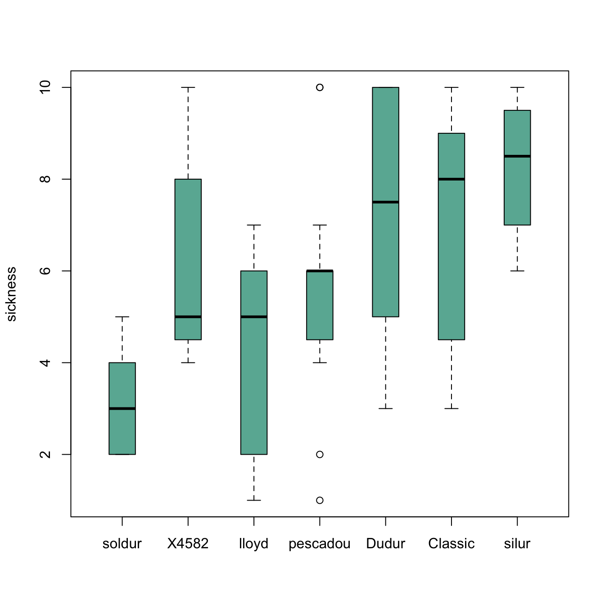

Reordering category by median
The most common need is to reorder categories by increasing median. It allows to quickly spot what group has the highest value and how categories are ranked.
It is doable using the reorder() function in
combination with the with() function as suggested
below:

# Create data : 7 varieties / 20 samples per variety / a numeric value for each sample
variety <- rep( c("soldur", "silur", "lloyd", "pescadou", "X4582", "Dudur", "Classic"), each=20)
note <- c( sample(2:5, 20 , replace=T) , sample(6:10, 20 , replace=T),
sample(1:7, 30 , replace=T), sample(3:10, 70 , replace=T) )
data <- data.frame(variety, note)
# Create a vector named "new_order" containing the desired order
new_order <- with(data, reorder(variety , note, median , na.rm=T))
# Draw the boxplot using this new order
boxplot(data$note ~ new_order , ylab="sickness" , col="#69b3a2", boxwex=0.4 , main="")Give a specific order
Boxplot categories are provided in a
column of the input data frame. This column needs to be a
factor, and has several levels. Categories
are displayed on the chart following the order of this factor, often
in alphabetical order.
Sometimes, we need to show groups in a specific order (A,D,C,B
here). This can be done by reordering the levels, using the
factor() function.

#Creating data
names <- c(rep("A", 20) , rep("B", 20) , rep("C", 20), rep("D", 20))
value <- c( sample(2:5, 20 , replace=T) , sample(6:10, 20 , replace=T),
sample(1:7, 20 , replace=T), sample(3:10, 20 , replace=T) )
data <- data.frame(names,value)
# Classic boxplot (A-B-C-D order)
# boxplot(data$value ~ data$names)
# I reorder the groups order : I change the order of the factor data$names
data$names <- factor(data$names , levels=c("A", "D", "C", "B"))
#The plot is now ordered !
boxplot(data$value ~ data$names , col=rgb(0.3,0.5,0.4,0.6) , ylab="value" ,
xlab="names in desired order")Grouped and ordered boxplot
In a grouped boxplot, categories are organized in groups and subgroups. For instance, let’s take several varieties (group) that are grown in high or low temperature (subgroup).
Here both subgroups are represented one beside each other, and groups are ranked by increasing median:

# Create dummy data
variety <- rep( c("soldur", "silur", "lloyd", "pescadou", "X4582", "Dudur", "Classic"), each=40)
treatment <- rep(c(rep("high" , 20) , rep("low" , 20)) , 7)
note <- c( rep(c(sample(0:4, 20 , replace=T) , sample(1:6, 20 , replace=T)),2),
rep(c(sample(5:7, 20 , replace=T), sample(5:9, 20 , replace=T)),2),
c(sample(0:4, 20 , replace=T) , sample(2:5, 20 , replace=T),
rep(c(sample(6:8, 20 , replace=T) , sample(7:10, 20 , replace=T)),2) ))
data=data.frame(variety, treatment , note)
# Reorder varieties (group) (mixing low and high treatments for the calculations)
new_order <- with(data, reorder(variety , note, mean , na.rm=T))
# Then I make the boxplot, asking to use the 2 factors : variety (in the good order) AND treatment :
par(mar=c(3,4,3,1))
myplot <- boxplot(note ~ treatment*new_order , data=data ,
boxwex=0.4 , ylab="sickness",
main="sickness of several wheat lines" ,
col=c("slateblue1" , "tomato") ,
xaxt="n")
# To add the label of x axis
my_names <- sapply(strsplit(myplot$names , '\\.') , function(x) x[[2]] )
my_names <- my_names[seq(1 , length(my_names) , 2)]
axis(1,
at = seq(1.5 , 14 , 2),
labels = my_names ,
tick=FALSE , cex=0.3)
# Add the grey vertical lines
for(i in seq(0.5 , 20 , 2)){
abline(v=i,lty=1, col="grey")
}
# Add a legend
legend("bottomright", legend = c("High treatment", "Low treatment"),
col=c("slateblue1" , "tomato"),
pch = 15, bty = "n", pt.cex = 3, cex = 1.2, horiz = F, inset = c(0.1, 0.1))